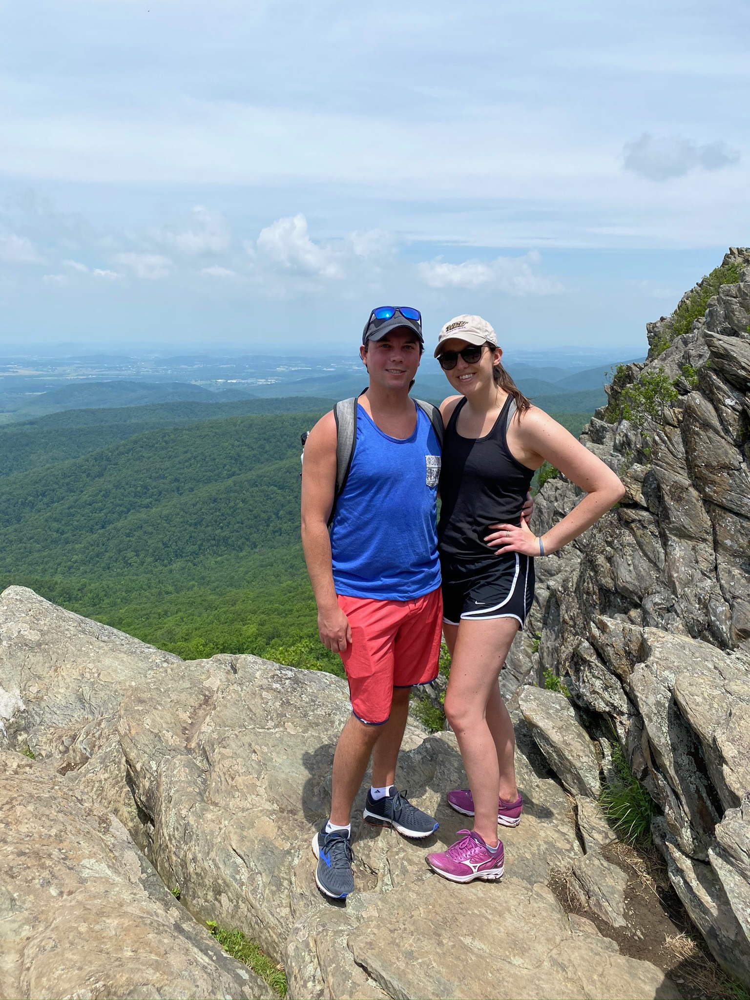
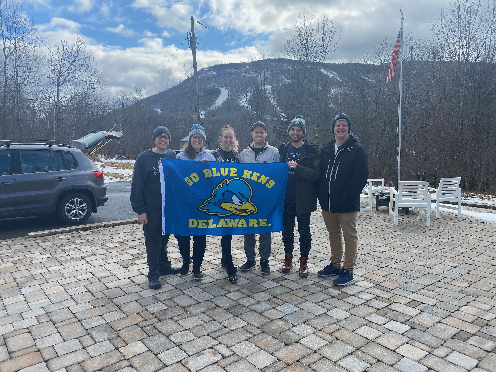

About Me
-
I was born in Galloway Township located in southern New Jersey.
-
I currently reside in the city of brotherly love, Philadelphia!
-
One goal I have in life is to travel to as many places throughout the world as possible and experience different cultures!
-
The best job I've had so far would be the elementary school teacher job I most recently had.
I was a first-grade teacher and although I will miss teaching and working with children,
I am excited for new opportunities and learning new skills that will hopefully lead to a new career!
Interests
-
Golf
-
Sitting on the beach whenever possible
-
Hiking, exercising, and recently, yoga
-
Video Games- PC and xbox
-
Snowboarding
-
Watching Philly sports, mainly the EAGLES (Go Birds!)
-
Traveling, going on vacation, and going to fun events like sports' games, concerts, music festivals, etc.




|